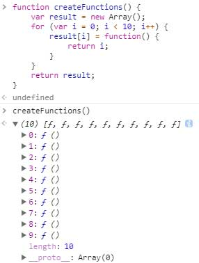
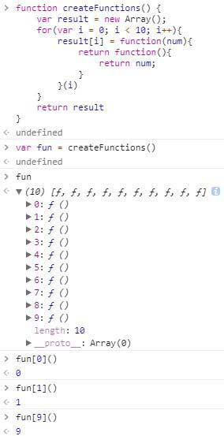

参考了《JavaScript高级程序设计》和阮一峰先生的博客http://www.ruanyifeng.com/blog/2009/08/learning_javascript_closures.html
概念
闭包是指有权访问另一个函数作用域中的变量的函数。
理解：
1.闭包首先肯定是一个函数。
2.这个函数能用其他函数里面的变量
这里得了解js的作用域以及作用域链的知识了。
我们都知道，js里面的函数是可以直接使用全局变量的，但是如果一个变量是在函数内部声明的话，那么函数外面的世界是不能直接读取该变量的。
js高程设计这本书对作用域链的概括：当某个函数被调用时，会创建一个执行环境及相应的作用域链。然后，使用 arguments 和其他命名参数的值来初始化函数的活动对象。但在作用域链中，外部函数的活动对象始终处于第二位，外部函数的外部函数的活动对象处于第三位，…直至作为作用域链终点的全局执行环境。
作用域链这里不详细讲，需要另开一篇文章才讲的清
但是，有时候我们需要读取函数内部的内容，那该怎么办呢？
其实只要把函数内部的内容
return出来就可以了。
第一种直接return
上述代码改写下：
第二种间接return
继续改写代码：
这里的inside函数就是闭包
上面的代码中，由于 inside 函数在 test2 函数内部，其实 inside 就是 test2 的孩子，js中，孩子可以直接用爸爸的，但是爸爸不能直接用孩子的。（和现实生活很像，孩子用父母的钱，但是父母很少开口跟孩子要钱，有的父母估计都要不到。。。）
所以 inside 函数是可以直接读取到变量
b的，但我们最终目的是让 test2 函数外面的世界也能读取到b的值，这个时候必然需要return出来。而 inside 是函数，直接return函数名即可。
test2()表示立即执行 test2 函数，看了代码就知道，立即执行 test2 得到的是 inside 函数,所以var outside_b = test2();这一步相当于把 inside 函数赋值给了outside_b，然后outside_b()立即执行的其实是 inside 函数，所以先得到 函数内部直接使用:2。
为什么紧接着会有 函数外部间接使用:undefined 呢？
还是看代码，inside 函数立即执行的是
console.log("函数内部直接使用:" + b);这段代码，其实返回的也是这段代码，你试试console.log()里面再套个console.log返回的也是undefined
|
|
我觉得阮一峰先生对闭包的总结非常好：在本质上，闭包就是将函数内部和函数外部连接起来的一座桥梁。
接下来看看高程书里面的例子：

从图中可以看到，它返回的是一个数组，里面有10个函数，并且每个函数是一样的。
我们期望的是每个函数都应该返回自己的索引值，但结果并不是。
书中的解释：每个函数的作用域链中都保存着 createFunctions() 函数的活动对象，所以它们引用的都是同一个变量
i。当 createFunctions() 函数返回后，变量i的值是10，此时每个函数都引用着保存变量i的同一个变量对象，所以在每个函数内部i的值都是10。
老实说，这个解释我一开始看不懂，想了半天我自己改了下：
|
|
这样一改稍微能理解了吧，其实本质是一样的，我们以为它会将每个
i返回，但是其实它是直接遍历完将最后的i值返回给我们，也就是说它直接遍历完后将最终的i值赋值给数组，数组循环添加了10次同样的i值。
如何返回每个i值呢，改变下：

改写后，没有直接把闭包赋值给数组，而是定义了一个匿名函数，并将立即执行该匿名函数的结果赋值给数组。这里的匿名函数有一个参数
num，也就是最终的函数要返回的值。在调用每个匿名函数时，我们传入了变量i。由于函数参数是按值传递的，所以就会将变量i的当前值复制给参数num。而在这个匿名函数的内部，又创建并返回了一个访问num的闭包。这样一来，result数组中的每个函数都有自己num变量的一个副本，因此就可以返回各自不同的数值了。
其实(i)起到了立即执行的作用，这样每次遍历就立即执行函数而不是等遍历完才执行
闭包中的this对象
首先强调一点：普通函数中的this指向全局对象，构造函数中的this指向实例，老早以前就写过，切记！！！
高程书指出：this对象是在运行时基于函数的执行环境绑定的。在全局函数中，this等于
window(非node环境)；而当函数被作为某个对象的方法调用时，this等于那个对象。不过，匿名函数的执行环境具有全局性，因此其this对象通常指向window。但有时候由于编写闭包的方式不同，这一点可能不会那么明显。
先来看看阮一峰先生的举例(和高程书上一样的)：
另一个：
为什么两者的值不一样？
我的理解：两段代码都
return function(){...}，那么这个function其实是匿名函数而且并不是object对象的方法(getNameFunc才是)，所以return function(){return this.name;};里面的this其实指向全局对象window,那么window.name在这里是"The Window"。
第二段代码在
return function(){...}之前就将匿名函数 getNameFunc 的this赋值给了that，getNameFunc 匿名函数是object对象的方法，所以他的this指向该对象，那么that也就指向该对象，所以这里的值是object.name也就是"My Object"
书上解释：每个函数在被调用时都会自动取得两个特殊变量：this和arguments。内部函数在搜索这两个变量时，只会搜索到其活动对象为止，因此永远不可能直接访问外部函数中的这两个变量。不过，把外部作用域中的this对象保存在一个闭包能够访问到的变量里，就可以让闭包访问该对象了。
几种特殊情况下，this的值可能会意外的改变
书上内容：第一行代码就是简单的调用了
object.getName()。第二行代码在调用该方法前先给它加上了括号。虽然加上括号后，就好像只是在引用一个函数，但this的值得到了维持，因为object.getName和(object.getName)的定义是相同的。
第三行代码先执行了一条赋值语句，然后在调用赋值后的结果。因为这个赋值表达式的值是函数本身，所以this得值不能得到维持，结果就返回了”The Window”(可能this从object改变成了getName这个函数)。
内存泄漏
书中内容：
由于IE9之前版本对JScript和COM对象使用不同的垃圾收集例程（高程第4章），因此闭包在IE的这些版本中会导致一些特殊的问题。具体来说，如果闭包的作用域链中保存着一个HTML元素，那么就意味着该元素将无法被销毁。
|
|
以上代码创建了一个作为element元素事件处理程序的闭包，而这个闭包则又创建了一个循环引用。由于匿名函数保存了一个对
assignHandler()的活动对象的引用，因此就会导致无法减少element的引用数。只要匿名函数存在，element的引用数至少也是1，因此它所占用的内存就永远不会被回收。
解决方法：
在上面的代码中，通过把
element.id的一个副本保存在一个变量中，并且在闭包中引用该变量消除了循环引用。即使闭包不直接引用element，包含函数的活动对象中也仍然会保存一个引用。因此，有必要把element变量设置为null。这样就能够解除对DOM对象的引用，顺利地减少其引用数，确保正常回收占用的内存。